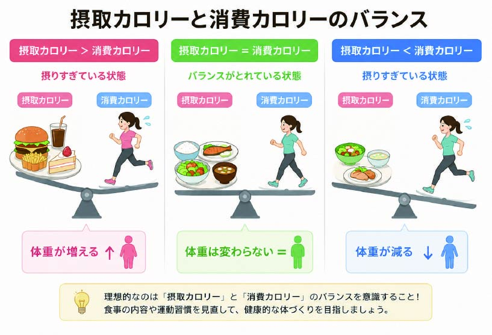
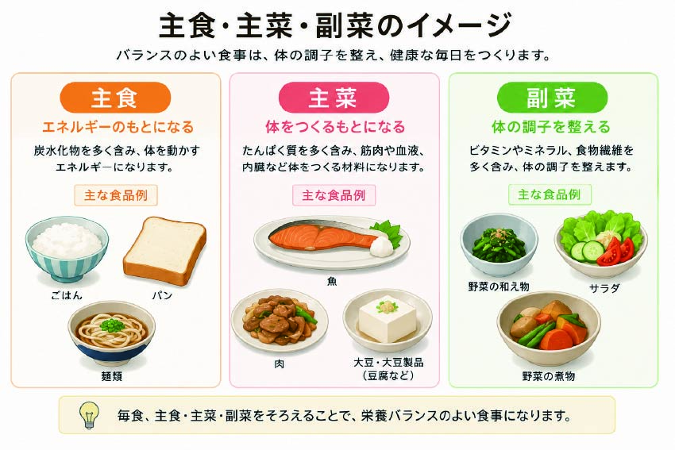
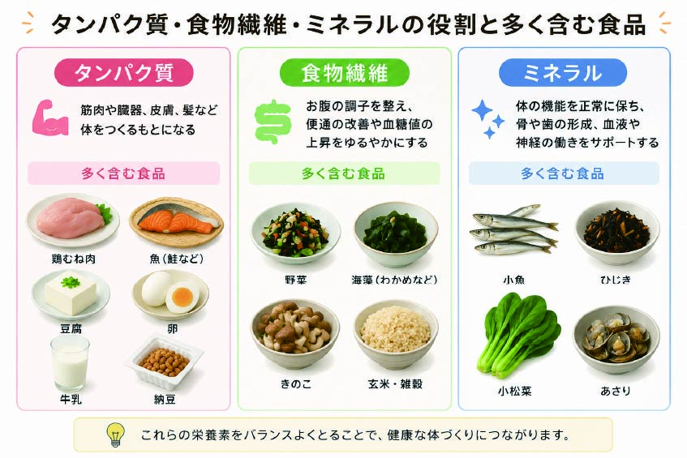
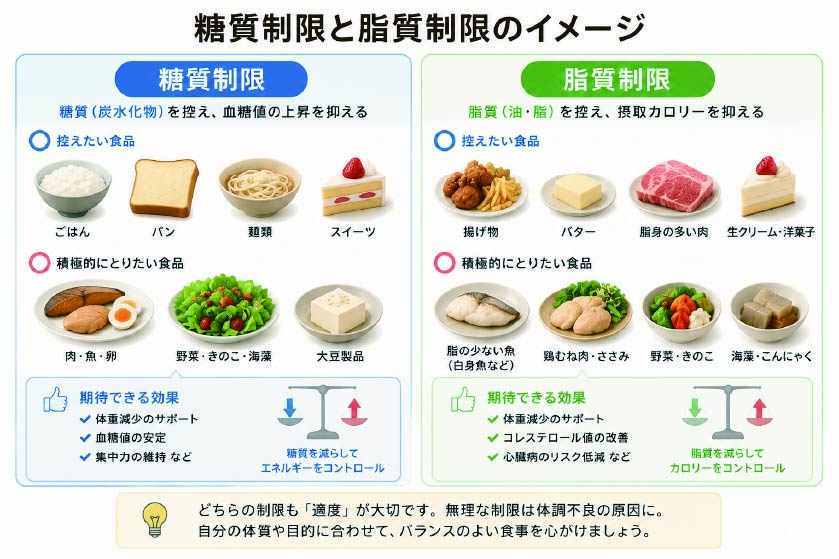
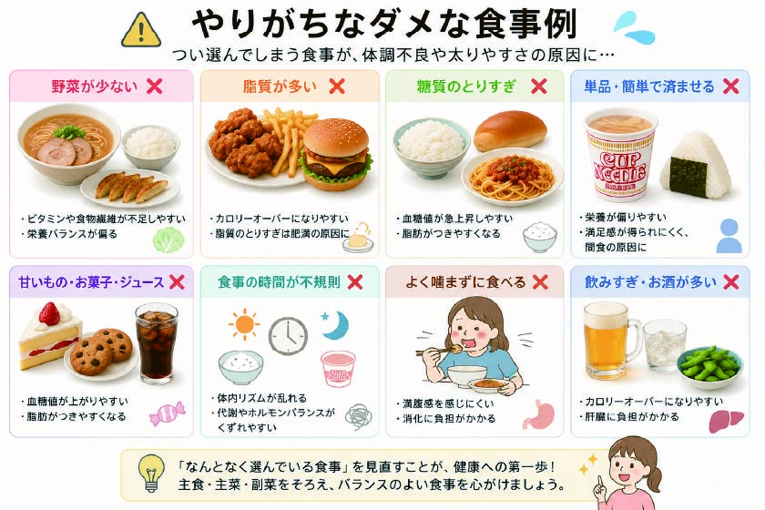
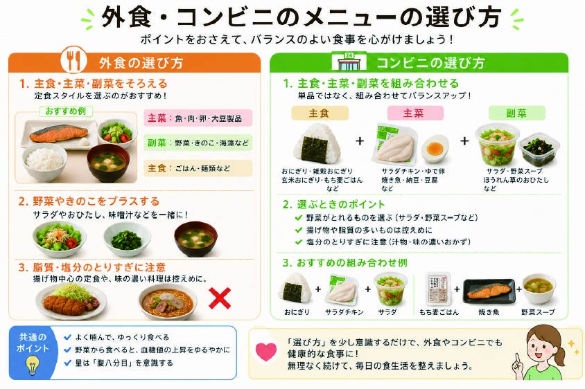

- トップ >
- 食事・栄養ガイド
食事・栄養ガイド
ダイエットの基本となる食事と栄養バランスについてのポイントをまとめています。
摂取カロリーと消費カロリーのバランス

ダイエットはただ食事量を減らせばよいというわけではありません。大切なのは、体に必要な栄養を確保しながら、摂取エネルギーを適度に調整することです。極端な食事制限は一時的に体重が落ちても、筋肉量の低下や基礎代謝を招き、結果的にリバウンドしやすくなります。健康的に痩せるためには、食事・栄養・運動を組み合わせて無理なく継続できる習慣が大切です。
主食・主菜・副菜について

ダイエット中の食事で重要なことは、「食べないこと」ではなく、「食べて整えること」です。主食・主菜・副菜をそろえることで、エネルギー源、筋肉の材料、体調を整える栄養素をバランスよく確保しやすくなります。食事栄養ガイドでも、主食・主菜・副菜を組み合わせた食事例が基本とされています。
タンパク質・食物繊維・ミネラルについて

ダイエット中は食事量が減る分、栄養素の不足が起こりやすくなります。特に意識したいのが、筋肉維持に必要なたんぱく質、満腹感や便通改善に役立つ食物繊維、代謝を支えるビタミン・ミネラルです。体重を落とすことだけを優先して栄養が偏ると、疲れやすさや筋肉量の低下、リバウンドの原因になりかねません。健康的に痩せるには、カロリーだけでなく栄養の質も重視する必要があります。
糖質と脂質の見直し

ダイエットでは糖質や脂質が悪者にされがちですが、どちらも体に必要な栄養素です。重要なのが「ゼロにすること」ではなく、「取りすぎやすい食品を減らし、適量に整えること」です。糖質は主食として適量を確保しつつ、甘い飲み物やお菓子を控えることがポイントです。脂質も揚げ物や加工食品に偏らないようにし、魚やナッツなどから質の良い脂質を取り入れると、無理なく食事を整えやすくなります。
やりがちなダメな食事法

ダイエットで失敗しやすくなるのは、食べ過ぎだけでなく「極端な我慢」や「偏った食べ方」です。朝食を抜き、サラダだけの食事、夜のドカ食いなどは、一見ダイエット向きに見えても、空腹の反動や栄養不足を招きやすく、長続きしにくい原因になります。大切なのは、完璧を目指すことではなく、続けやすい形で少しづつ整えていくことです。
外食・コンビニの選び方

ダイエットを成功させるには、特別な食品や極端な制限よりも、日常の選び方を少しづつ変えることが効果的です。コンビニでは主食・たんぱく質・野菜をそろえる、外食では定食を選ぶ、間食は量と頻度を決めるなど、小さな工夫を積み重ねることで無理なく続けやすい食生活になります。健康的なダイエットは「短期間で落とすこと」より、「続けられる食生活をつくること」が成功へのカギです。